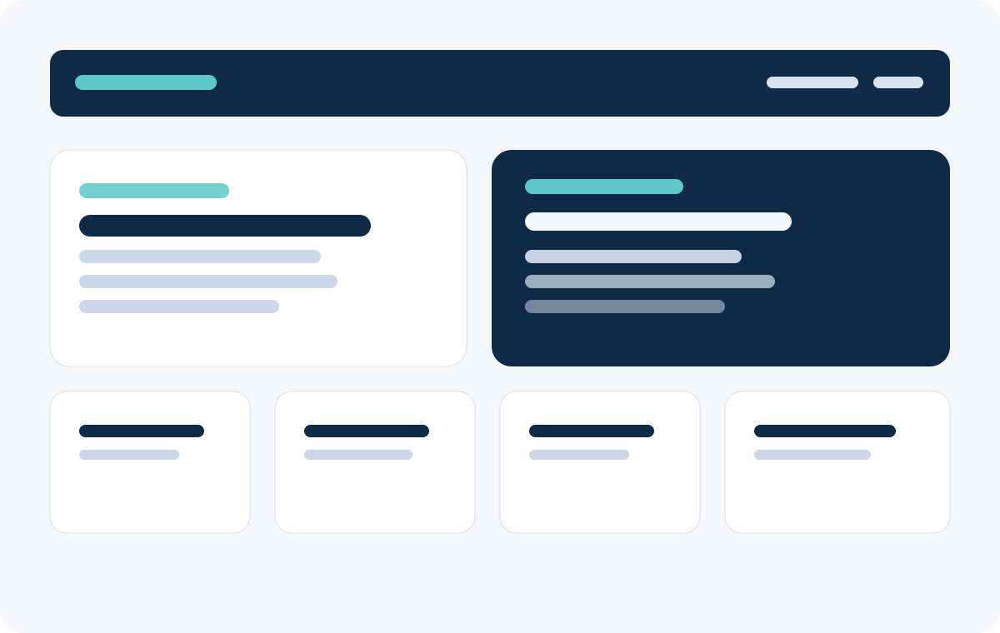

Sample Web Design
Description: A responsive web design project that showcases modern layout structure, accessible content presentation, and clean digital communication.
Technologies Used: HTML, CSS, GitHub, Visual Studio Code
GitHub Link: View Repository
Lessons Learned: Strong design work depends on clear hierarchy, consistent styling, and thoughtful organization of content.